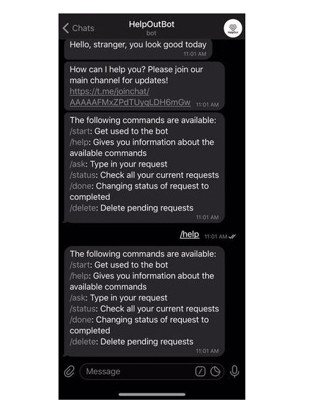
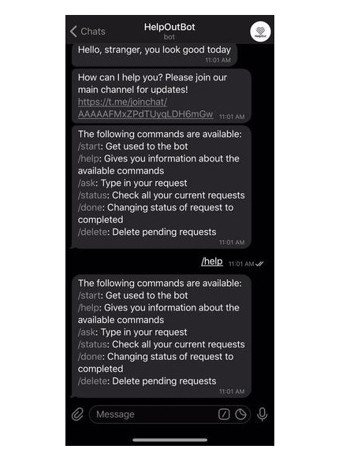
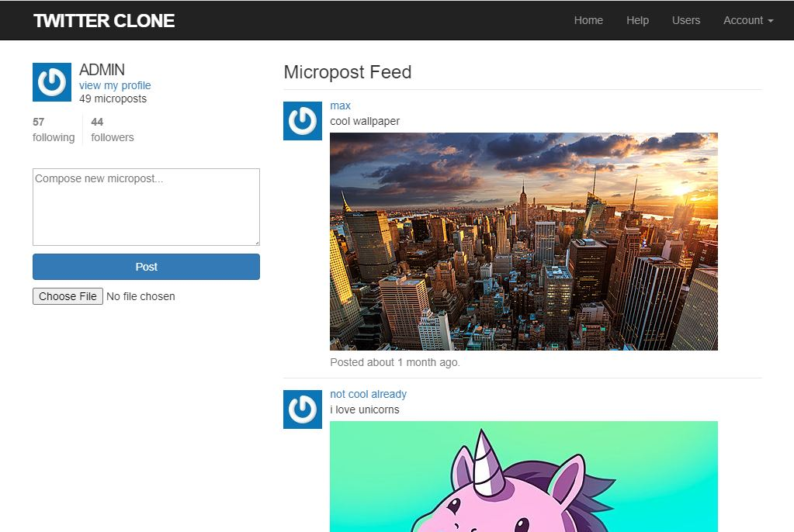
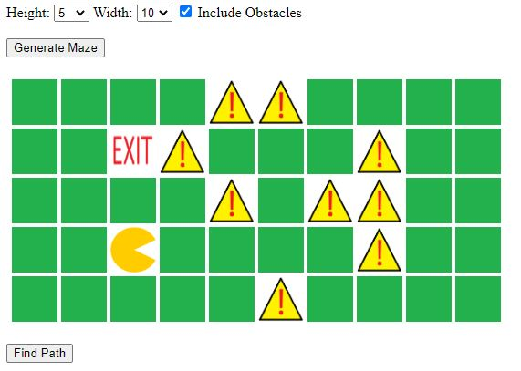

About Me
Double Degree in
Information Systems and Business Management
at Singapore Management University
I have a strong interest in problem-solving.
As a deep thinker since young, I have always been intrigued by the workings of systems and the world.
Gradually, this sparked my desire to solve problems whether it is a mathematical problem sum or a programming problem.
I have also taken some projects that require my team to work with real-life industry partners to solve some of their problems.
I would always feel fulfilled whenever I complete such projects.
 

Participated in a two-day Hackathon organised by National Youth Council.
The main purpose of this Telegram Bot is to help those affected by the Covid situation by promoting acts of kindness.
It is built with Python Telebot API and MySQL as the database.

This Twitter Clone application was built mianly with Ruby on Rails.
Due to the capabilities of my laptop, I used AWS EC2 enviornment to complete this project.
It is deployed on Heroku with PostgreSQL and SendGrid add-ons.
Features include: posting images, account activation mailer, password reset mailer.

Built the application mainly with PHP for a school assignment, with JavaScript and CSS for the animation.
The focus of the application was to test BFS - shortest path concept. Pacman will move from the start to the end.
Obstacles can be included when generating the maze.
May 2020 - Auguest 2020
Internship
I will be embarking on an internship as a Software Engineering Intern at a HR cloud software firm.